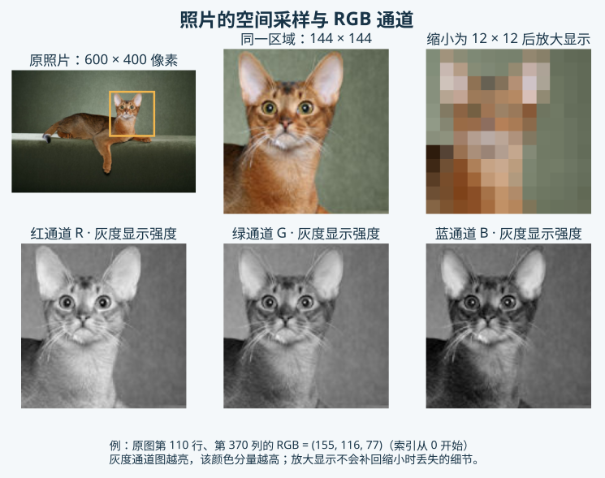
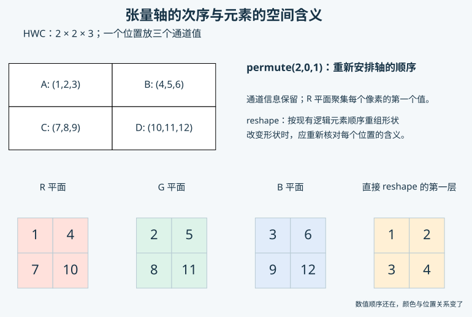

课程依次使用猫狗识别、宠物分割和 H&E–IHC 三个项目。网页解释知识，Kaggle 提供短小的计算练习；每个目标项目由你在自己的 Kaggle Notebook 或本地独立实现。本章出现的具体数值用于解释表示方式，真实实验结果仍要由自己的程序产生。
图像、颜色与文件
数字图像与像素
相机接收的是来自场景的光。传感器在空间上排列许多感光位置，分别记录局部信息，再把测量结果转换成有限精度的数值。把连续空间按位置取样，称为空间采样；把测量强度记录为有限等级，称为量化。这两项操作共同决定数字图像能够保存什么信息。
像素是数字图像网格中的一个位置。它可以记录一个亮度值，也可以记录多个颜色分量。像素没有固定的现实大小：一张近距离照片和一张远距离照片，即使都宽 500 个像素，每个像素覆盖的实际区域也可能不同。病理图像常需要另外记录每像素对应的微米数，日常照片则通常没有直接可用的物理尺度。
先想象一张只有两行三列的灰度图。它一共有六个像素位置，可以用六个数字记录。把其中一个数调亮，只会改变对应位置的显示。大照片遵循相同原则，只是网格更加密集。后续的裁剪、缩放和卷积，都在这个有空间位置的网格上进行。
空间分辨率与显示尺寸
图像的宽和高说明它沿两个方向保存了多少采样位置。一张 600×400 的照片共有 240000 个像素；把它在网页上显示得更宽，并不会自动获得更多真实测量。显示软件只能使用已有数值安排屏幕上的颜色。把小图放得很大后看见方块或模糊边缘，正是采样信息有限的表现。
将原图真正缩小为 60×40，会减少保存的位置数，也会丢失细小结构。再放大为 600×400，可以让画布恢复原尺寸，但已经丢失的毛发和边缘无法仅靠普通插值重新测得。图像的像素尺寸、屏幕上的显示宽度和现实对象的大小是三个不同概念，记录图片处理时要说明具体改变了哪一项。

观察同一处猫脸的放大区域：原始网格中相邻颜色存在细小变化，降低采样数量后，这些变化可能合并。图中的 RGB 通道可以分别显示同一位置的三个分量。对照这些视图，能够理解为什么查看一张图片时既要看整体对象，也要看原始尺寸和局部细节。
灰度、RGB 与透明通道
灰度图通常每个位置记录一个数。常见 8 位灰度图用 0 表示黑、255 表示白，中间数值显示不同深浅。这里的数值描述存储与显示约定；经过其他处理的科学图像也可能采用不同范围，需要读取来源说明。
RGB 图像每个位置记录红、绿、蓝三个颜色分量。以常见 0—255 范围为例，(255,0,0) 显示红色，(0,255,0) 显示绿色，(0,0,255) 显示蓝色，(255,255,255) 显示白色。(80,80,80) 的三个分量相等，显示为较暗的灰色。RGB 三个通道中的同一坐标共同描述一个像素，不能把它们误认为三张不同对象的照片。
RGBA 在 RGB 以外增加透明度通道 Alpha。完全透明的像素如何显示，还取决于它叠加的背景；将 RGBA 简单丢掉 Alpha，可能产生意外颜色。读取普通猫狗照片时通常明确转换为 RGB，避免一部分输入有三个通道、另一部分有四个通道。
BGR 使用相同的三个颜色分量，但顺序为蓝、绿、红。某些图像库默认采用 BGR；直接按照 RGB 显示时，红蓝颜色会交换。灰度图还可能被保存为三个相同通道，因此仅凭肉眼看到“黑白照片”不能确定它的通道数。读取后检查通道数、通道顺序和实际显示，三者需要相互对应。
数值类型与值域
数值类型说明一个数如何存储，以及能够表示的范围和精度。常见图片文件解码后使用无符号 8 位整数，记为 uint8，可表示 0—255。神经网络计算通常使用浮点数，例如 float32，它能够表示小数和负数，适合权重、梯度与连续图像运算。
把 uint8 转成 float32，只改变表示类型，原值 128 仍然是 128。再除以 255，才把这个数变成约 0.502。类型转换与范围变换需要分别理解。如果已经位于 0—1 的图像又除以 255，显示会很暗；如果本应使用 0—1 的计算收到了 0—255，输入尺度会相差 255 倍。
有些医学或科学图像使用 16 位整数、浮点强度或特殊编码，不能看到“图片”就一律除以 255。本课程的猫狗 RGB 照片采用常见 8 位表示，仍要在读取后检查实际类型、最小值和最大值。类别标签则是离散编号：猫 0、狗 1，标签 1 不表示“比猫亮一点”。颜色与类别虽然都可以写成数字，含义不同。
图像文件与内存
JPEG、PNG 等格式决定图片怎样保存在磁盘上。JPEG 通常采用有损压缩，较高压缩程度可能带来块状或边缘伪影；PNG 使用无损压缩，能够恢复其保存的像素值，也适合保存离散标签图。把 JPEG 转存为 PNG，只能保存当前已经解码的像素，无法恢复此前压缩丢失的信息。
磁盘上的文件大小不能直接说明模型读取后占多少内存。同样尺寸的两张 JPEG，会因纹理和压缩设置不同而大小不同。解码成张量后，内存主要取决于数值数量和类型。一张 256×256 的 RGB 图像包含 196608 个数，用 uint8 保存这些数约需 192 KiB，改成 float32 约需 768 KiB，尚未计算额外对象开销。
十六张这样的 float32 图片，单是输入数值就约需 12 MiB。训练还要保存中间特征、参数和梯度，实际内存会更大。这也解释了为什么把边长翻倍，会让像素数量变成四倍；增大图片尺寸和批量大小都需要考虑计算条件。
图像处理
缩放、插值与裁剪
模型常需要同一批图片具有一致尺寸。缩放要为新的网格位置确定数值，这项估计称为插值。最近邻直接采用附近一个像素的值，放大后容易看见块状边界；双线性插值根据附近四个位置的数值加权计算，颜色通常更平滑。缩小时还需要注意抗混叠处理，避免细密条纹形成不存在的纹路。
RGB 照片可以使用适合连续颜色的插值。分割标签图中的 0、1、2 等表示类别，插出 1.4 没有对应类别，因此标签缩放通常使用最近邻。两种对象即使都是图像文件，也需要根据数值含义选择处理方式。
将 600×400 直接改成 128×128，会分别压缩宽和高，动物的比例可能改变。常见选择包括保持比例缩放后裁剪，或者保持比例缩放后补边。裁剪会移除观察范围，补边会增加人工背景，各有影响。先显示处理后的图片，检查耳朵、身体和背景发生了什么，再为自己的项目确定方法。
裁剪与缩放也会影响坐标。原图中一处位置经过裁剪后，起点改变；经过缩放后，位置间距改变。后面做图像分割时，照片与掩膜必须接受同样的空间变换，才能继续表示同一位置。
归一化与标准化
把 0—255 除以 255，是一种范围缩放。它让颜色数值处于容易处理的范围，但不会使每个通道的均值都等于零。“归一化”在不同资料中还可能指其他操作，阅读代码时要看实际算式。
常见通道标准化按“当前值减去均值，再除以标准差”计算。假设某通道的值为 0.8，所用均值为 0.5、标准差为 0.25，处理结果就是 (0.8−0.5)÷0.25=1.2。出现大于 1 或小于 0 的数是这种变换的正常结果，不能据此判断图像损坏。
自己估计均值和标准差时，使用训练数据并保存统计方式，验证和测试沿用同一规则。使用预训练模型时，读取该权重要求的颜色顺序、尺寸和标准化参数。展示标准化后的图片前，通常需要恢复相应颜色范围；直接把标准化张量交给显示函数，可能得到失真的颜色。
张量与运算
标量、向量、矩阵与张量
一个温度值或一个损失值可以称为标量。按顺序排列的一组数是向量，例如三个颜色分量 (0.2,0.5,0.8)。按行和列排列的数形成矩阵，一张灰度图可以用高×宽矩阵表示。RGB 图片还要增加颜色通道这个方向，一批图片又增加样本这个方向。
PyTorch 用张量统一表示这些对象。张量可以有零个、一个、两个或更多轴；标量也是零维张量。这里的“维度”指索引所需的轴数，并不等于有多少个数。一个含 1000 个元素的向量仍然只有一个轴，而形状为 2×2×3 的张量有三个轴、十二个数。
每一根轴都需要有具体含义。对于图像，它可能表示样本、颜色通道、高度或宽度；对于其他数据，也可能表示时间或特征。程序只看到尺寸和运算规则，不会自动知道哪一根轴是“颜色”。这些含义需要在读取、变换和模型计算中保持一致。
轴、形状与索引
形状 shape 按轴的顺序列出每根轴有多长。一张 128×128 RGB 图片，可以按高、宽、通道排列为 [128,128,3]，也可以按通道、高、宽排列为 [3,128,128]。两者都包含 49152 个数，但访问同一像素时使用的索引位置不同。

PyTorch 的二维卷积通常接收 [B,C,H,W]：B 为批量大小，C 为通道数，H 为高度，W 为宽度。四张 128×128 RGB 图片组成一批后，形状就是 [4,3,128,128]。这些字母是解释含义的约定，张量本身主要保存数值、形状、类型和设备等信息。
索引通常从 0 开始。单张 CHW 图片中，[0,2,5] 表示红色通道、第 3 行、第 6 列的值。空间坐标习惯写成横向 x、纵向 y，而矩阵索引通常先行后列，因此它在图片上对应 x=5、y=2。把行列顺序写反，有时仍能得到一个数，却读错了位置。
选择一个位置的全部通道，可以得到 RGB 向量；选择一整行，可以得到沿水平方向的一组像素。切片还可以选取一段范围，常见规则包含起点、不包含终点。因此第 2 行至第 4 行共三行，对应索引范围 1 至 4 的前闭后开区间。
批量与对应标签
批量 batch 是一次交给模型的一组样本。把多张相同尺寸的图片沿新的样本轴堆叠，能够让硬件同时处理它们。这个操作保留每张图的独立编号，不能把不同照片拼接成一张大照片再当成同一种输入。
图片的次序与标签的次序必须一致。四张图片的输入形状可以为 [4,3,128,128]，猫狗标签为 [4]，模型分数为 [4,2]。第二个标签描述第二张图片，第二行分数也属于第二张图片。打乱样本时，需要让图像与标签一起移动。
同一批中通常要求图片尺寸一致，因为普通堆叠操作要形成规则数组。原图大小不同时，先选择合适的缩放、裁剪或补边方法。数据集包含的总样本数与批量大小不同：数据集有几千张照片，一次只读取其中若干张。最后一批可能少于预设批量大小，模型不应依赖固定的样本数量。
张量运算与汇总
逐元素运算让相应位置分别计算，例如每个颜色值除以 255，或者两张同尺寸图像在相同位置相减。矩阵乘法则把某一行和某一列的元素相乘再相加，常用于加权组合。两种运算的规则与输出形状不同，不能只凭输入都是张量就互相替代。
求均值需要明确汇总哪些轴。对于 [B,C,H,W]，仅汇总 H、W，会留下每张图、每个通道的均值，形状为 [B,C]；同时汇总 C、H、W，得到每张图一个总体均值，形状为 [B]。再把 B 汇总，才得到整批数据的一个均值。
先预测输出形状，再运行一小段计算，是理解张量操作的有效方法。如果想得到三个通道各自的统计，却只得到一个数，说明颜色轴也被汇总掉了。保存均值时同时写清统计范围，能够避免以后把每图均值与训练集统计混用。
广播与对齐
广播允许形状不同、但某些轴兼容的张量一起进行逐元素计算。最简单的例子是让整张图减去一个标量，每个位置都使用同一个数。若要让红、绿、蓝通道分别减去不同均值，就需要把三个数放到通道轴对应的位置。
对于 [B,3,H,W]，通道均值可以表示成 [1,3,1,1]。长度为 1 的轴表示这项数值沿该方向重复使用：所有样本和空间位置使用各自通道的均值。PyTorch 从右侧对齐各轴，同一位置的长度需要相同，或其中一个为 1。
直接使用形状 [3]，三个数会先尝试对齐最右边的宽度轴。宽度恰好为 3 时，运算可能成功，却按列减去了三个数。用一个宽度为 3 的小张量比较两种写法，再检查每个位置，能够看见这种形状合法、含义错误的情况。
reshape 与 permute
reshape 重新解释元素的分组形状，元素总数保持不变。把 2×3 的灰度图整理成长度 6 的向量，是一个典型例子。这样做会暂时移除行列结构的明确表示；后续想恢复图像，需要知道原来的形状和排列方式。
permute 改变轴的排列，用于将 HWC 表示调整为 CHW。观察一张 2×2 的 RGB 小图：四个像素依次为 A=(1,2,3)、B=(4,5,6)、C=(7,8,9)、D=(10,11,12)。正确调整后，红色通道的两行应为 (1,4) 和 (7,10)，绿色通道为 (2,5) 和 (8,11)，蓝色通道为 (3,6) 和 (9,12)。

若把连续存放的 1 至 12 直接 reshape 为 [3,2,2]，第一层会变成 (1,2) 和 (3,4)，把不同颜色和位置混在一起。输出形状虽然相同，像素含义已经不同。因此轴重排需要使用明确的轴变换，不能只改 shape。某些变换还会改变张量的内存步幅；初学时先检查数值位置，遇到后续操作要求连续内存时再查看相应说明。
设备、数据与参数
CPU 和 GPU 都能保存张量并执行计算。设备信息说明当前数值位于哪里，它不会改变张量表示的是图片还是标签。同一次模型运算中，输入与参数通常需要放在兼容的设备上；仅把图片移到 GPU，而模型仍在 CPU，无法直接完成常见的前向计算。
模型参数是将来要学习的权重，输入图片是用来计算的数据。二者都可以是浮点张量，但作用不同。类别标签通常采用整数类型，布尔掩码用于选择有效位置。保存和加载文件后，再检查类型、形状、设备以及类别对应，可以及时发现读取方式与训练时不一致的问题。
Python 中的变量名用来引用这些对象；列表保存有顺序的项目，字典用名称保存设置，函数组织一项具体操作。Kaggle 练习会让你修改这些小例子，再将照片读成张量。暂时不熟悉语法时，先说清输入与输出是什么，有助于理解每一行正在处理哪个对象。
猫狗数据与知识练习

猫 · species 1 → 类别 0

狗 · species 2 → 类别 1
Oxford-IIIT Pet 提供宠物照片、猫狗 species、37 个品种及分割标注。本项目的猫狗分类使用 species：官方 1 为猫、2 为狗，对应模型标签 0 和 1。品种编号属于另一种任务，不能直接当成猫狗标签。先显示照片和对应名称，再建立自己的类别表。
在官方数据页面取得 Images 和 Annotations 后，照片位于 images，标注说明与清单位于 annotations。trainval.txt 和 test.txt 给出官方划分，trimaps 保存分割标注。读取时核对记录中的图像名、品种与 species 含义，保留原始来源及具体文件列表。
在知识练习中选一张猫和一张狗，观察原始尺寸、RGB 数值和处理后的图像；再组成一批，解释每根轴，分别计算通道均值和整图均值。改变大小后重新查看图像，尝试用小数值数组核对轴重排。完整的计算代码与运行说明位于 Kaggle。
独立项目需要另外取得完整数据，或在官方划分内选择规则明确的子集。先保存一份自己能够解释的数据读取与显示结果，再继续学习分类模型。这样，遇到预测异常时，就能先排查颜色、尺寸和标签，而不必一开始就怀疑网络结构。
数据文件与标注说明可查阅 Oxford-IIIT Pet 官方页面。张量类型、轴和设备操作可查阅 PyTorch 张量教程，具体练习仍在本章对应 Kaggle 页面中完成。